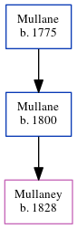

The child of Mullane, Mullane Mullane, the 4 times great-grandfather of Michele Copp (née Phillips), was born in Ireland (guesstimate) in 1800. He had 1 child.
Parents
was born in 1775
Children
was born in 1828
Family Tree

Generated by ged2site. Last updated on Jun 6, 2024